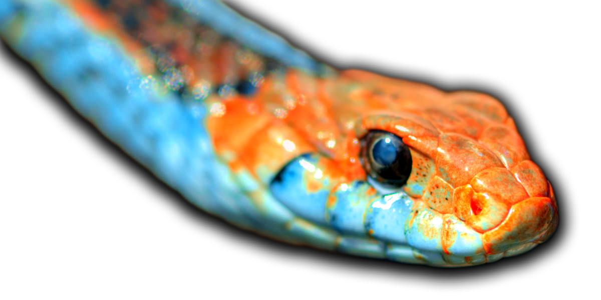

San Francisco Garter Snake
The San Francisco garter snake is often called the most beautiful snake in the United States.
San Francisco garter snakes are primarily active during the day. They may hunt after dark on warm evenings. The snakes are extremely shy, difficult to locate, and quick to flee to water or cover when disturbed.
Garter snakes are not dangerous.
Native to San Francisco, however, they have been endangered since 1967 due to the decrease of their natural habitat. They are currently residing in San Mateo County and north Santa Cruz County.
